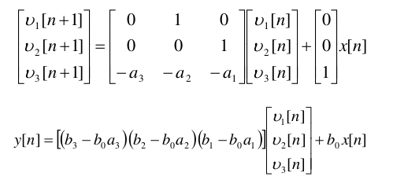
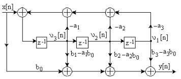
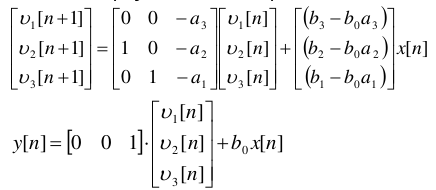
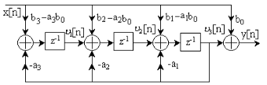
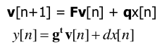
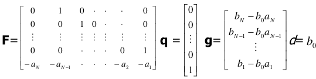
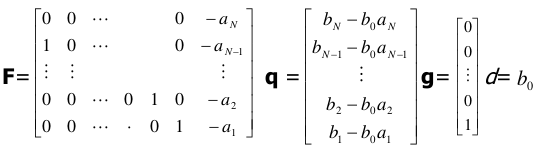

Implementarea în spațiul stărilor a filtrelor digitale IIR
Laborator 9, PSS
1 Obiectiv
Familiarizarea studenților cu formele de implementare tip în spațiul stărilor a filtrelor IIR.
2 Noțiuni teoretice
Implementarea în spațiul stărilor de tipul 1


Ecuațiile care definesc implementarea în spațiul stărilor tip I sunt prezentate în Fig. 1, pentru un sistem IIR de ordinul 3.
Realizarea sistemului conform acestor ecuații este în Fig. 2.
Implementarea în spațiul stărilor de tipul 2


Ecuațiile care definesc implementarea în spațiul stărilor tip I sunt prezentate în Fig. 3, pentru un sistem IIR de ordinul 3.
Realizarea sistemului conform acestor ecuații este în Fig. 4.
Ecuații pentru cazul general



În cazul general, întotdeauna avem cele două ecuații din Fig. 5:
- Ecuația de stare: dă starea \(\mathbf{v}[n+1]\) la momentul următor în funcție de starea la momentul curent \(\mathbf{v}[n]\) și intrarea curentă \(x[n]\)ș
- Ecuație de ieșire: \(\mathbf{y}[n]\) ieșirea le momentul curent în funcție de starea la momentul curent \(\mathbf{v}[n]\) și intrarea curentă \(x[n]\).
Particularizarea termenilor care apar în cele două ecuații, pentru tipul I și tipul II, este dată în Fig. 6 și Fig. 7.
3 Exerciții teoretice
Fie sistemul IIR cu funcția de sistem \[H(z) = \frac{1 + 2z^{-1} + 3 z^{-2} + 2 z^{-3}}{1 + 0.9z^{-1} + 0.8 z^{-2} + 0.5 z^{-3}}\]
- Să se implementeze sistemul în spațiul stărilor tip I și tip II.
- Calculați primele 5 valori ale răspunsului la treaptă, pentru condițiile inițiale \[v[0]= \begin{bmatrix} 0 \\ 0 \\ 1 \\ \end{bmatrix}\]
Fie sistemul descris în spațiul stărilor de următoarele ecuații:
\[v[n+1] = \begin{bmatrix} 0 & 1 \\ -0.81 & 1 \end{bmatrix} v[n] + \begin{bmatrix} 0 \\ 1 \end{bmatrix} x[n] \] \[y[n] = \begin{bmatrix} - 1.81 & 1 \end{bmatrix} + x[n] \]
- Determinați funcția de transfer a circuitului
- Calculați primele 5 valori ale răspunsului la treaptă, pentru condițiile inițiale \(v[0]= \begin{bmatrix} 0 \\ 1 \end{bmatrix}\)
- Reprezentați implementarea în spațiul stărilor (I și II) și în forma directă II.
4 Exerciții practice
Utilizați utilitarul
fdatoolpentru a proiecta unul din filtrele următoare:- Un filtru trece-jos IIR de ordin 4, de tip eliptic, cu frecvența de tăiere de 5kHz la o frecvență de eșantionare de 44.1kHz;
- Un filtru trece-sus IIR de ordin 4, de tip eliptic, cu frecvența de tăiere de 1kHz la o frecvență de eșantionare de 44.1kHz;
- Un filtru trece-bandă IIR de ordin 4, de tip eliptic, cu banda de trecere între 700Hz si 4kHz la o frecvență de eșantionare de 44.1kHz.
Exportați coeficienții în Workspace-ul Matlab.
Completați programul de mai jos pentru a face filtrarea temporală a unei secvențe video, cu filtrul proiectat mai sus. Testați funcția pe secvența video
veh_small.mp4.Folosiți ecuațiile de implementare în spațiul stărilor tip I, dar extinse pentru un sistem de ordinul 4.
v = VideoReader('videofile.mp4'); % Read all the frames from the video, one frame at a time. while hasFrame(v) frame = readFrame(v); % Do the processing heres % Output equation y = ... % State equation v1_next = ... v2_next = ... v3_next = ... v4_next = ... % Update for next iteration v1 = v1_next; v2 = v2_next; v3 = v3_next; v4 = v4_next; endÎn Matlab implementați o funcție
filter_spst(b, a, x)care filtrează un semnalxcu filtrul definit de coeficiențiibșia, de orice ordin \(n\).- Implementarea va fi realizată conform ecuațiilor de tip spațiul stărilor I
Testați funcția realizată mai sus coeficienții obținuți la exercițiul 3), pentru un semnal audio oarecare.
5 Întrebări finale
- TBD